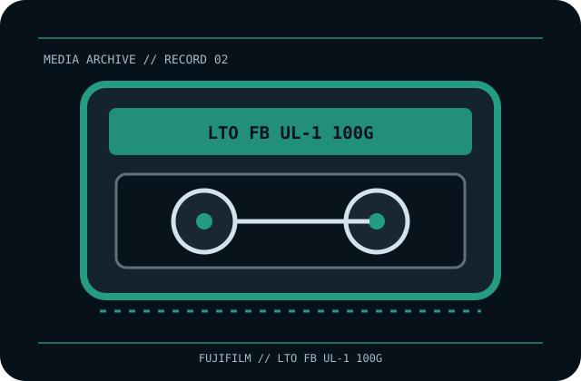

[ REMOVABLE MEDIA // MAGNETIC TAPE ]
FUJIFILM LTO Ultrium 1 Data Cartridge (LTO FB UL-1 100G)
Linear Tape-Open Ultrium Generation 1 (LTO-1), rewritable half-inch cartridge; Fujifilm model LTO FB UL-1 100G. This record identifies the media only; drive, host interface, firmware, software and any enclosure are separate.

EXACT SKU: FUJIFILM LTO FB UL-1 100G. The record distinguishes nominal uncompressed capacity from any compressed estimate and documents generation-specific host compatibility.
Format generation, capacity and compatible drives
| Manufacturer / exact SKU | FUJIFILM LTO FB UL-1 100G |
|---|---|
| Format / generation | Linear Tape-Open Ultrium Generation 1 (LTO-1), rewritable half-inch cartridge; Fujifilm model LTO FB UL-1 100G. |
| Native capacity | 100 GB native (uncompressed). |
| Compressed capacity | Up to 200 GB at the nominal 2:1 compression assumption; workload-dependent and not guaranteed. |
| Compatible drive generations | LTO-1 drives read/write; LTO-2 can read/write LTO-1 cartridges and LTO-3 can read LTO-1 media only where the LTO compatibility matrix and the specific drive manual permit it. No LTO-4-or-later compatibility should be assumed. |
| Interface and scope | The cartridge/disc has no direct host-computer interface. The compatible drive supplies its own SAS, Fibre Channel, SCSI, USB or other host connection; check the exact drive specification and driver/software chain. |
| Compatibility caveat | This is Fujifilm’s LTO-1 cartridge SKU, not the distinct HP C7971A SKU. Confirm the exact model and the drive’s supported generation; compression figures describe a nominal ratio only. |
Tape handling and preservation
Keep in its protective case in a clean, cool, stable environment within the exact tape and drive manuals’ ranges. Avoid dust, smoke, direct sun, moisture, magnetic fields, touching the tape, or opening the shell. Acclimate after transport; retain label/provenance and verify checksums and restores.
- Document the exact printed model, serial/batch or date code, write-protect/WORM status and source of the medium.
- For valuable data, keep at least two independently verified copies, record checksums, test restoration and plan migration before compatible hardware becomes unavailable.
Model-specific preservation and compatibility notes
Preservation note: magnetic tape is a format-dependent, obsolescence-prone medium. Keep a verified reader path and independent copies.
This is Fujifilm’s LTO-1 cartridge SKU, not the distinct HP C7971A SKU. Confirm the exact model and the drive’s supported generation; compression figures describe a nominal ratio only. Never infer interoperability from a similar cartridge shell, connector, brand or family name; confirm drive-generation support in the exact manufacturer's manual.
Manufacturer and archival references
- FUJIFILM — LTO tape media specificationsManufacturer family specification and generation reference; verify exact label suffix.
- LTO Program — generation compatibilityOfficial format-generation compatibility guidance.
- LTO Japan — FUJIFILM LTO-1 LTO FB UL-1 100GSKU-specific model and stated 100/200 GB capacity record.
Capacity, compatibility and handling are specific to this model and its supported drive generation. For legacy equipment, preserve the manual and test an end-to-end read before relying on the cartridge for migration.